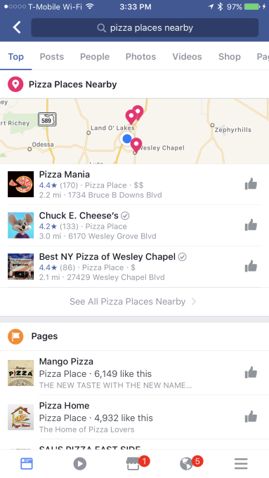
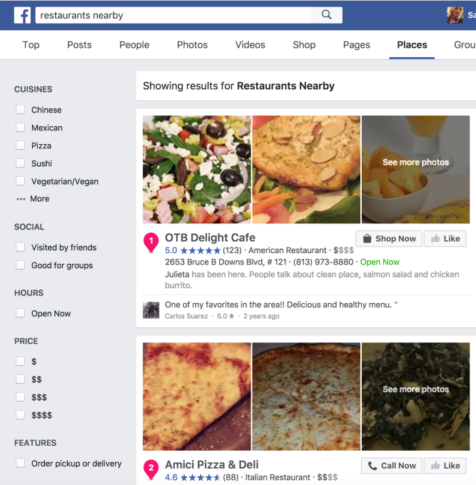

Facebook is testing an enhanced local search feature that could see the social network creeping in on Google Maps, Foursquare and Yelp territory, TechCrunch learned and Facebook confirmed. Facebook users are now able to surface recommendations of nearby places – like “dinner nearby” or “bars nearby,” for example – by entering a query in Facebook’s search box on the web or mobile. This returns a box in Facebook’s search results that include a list of relevant businesses, along with their ratings on Facebook, a map, as well as which friends of yours have visited or like the places in question.
The company declined to share other information about the addition, including how long the test has been in progress. It’s possible some users have had this option for a much longer time, but others are only now gaining access or don’t have it at all, as is standard with Facebook’s tests.
The feature itself isn’t immediately obvious because the place suggestions aren’t always the first search result. On the web, the map and list of recommendations often show up as you scroll a bit further down, below the results for posts from Groups, links, posts from friends, and Facebook Pages.

The suggestions themselves are in a small box in the search results that includes a pink pin drop icon next to the heading, like “Shopping & Retail Nearby” or “Pizza Places Nearby” or whatever else you may have searched. Facebook is also prompting these searches via auto-complete suggestions from the search box.
It’s unclear how Facebook determines which results to show you in the small box, as it’s seemingly not number of reviews, rating, or proximity to your current location that determines which places are shown first. Nor is it social data – for instance, a place visited by over a dozen friends was returned below one visited by just a few.

The company declined to share other information about the addition, including how long the test has been in progress. It’s possible some users have had this option for a much longer time, but others are only now gaining access or don’t have it at all, as is standard with Facebook’s tests.